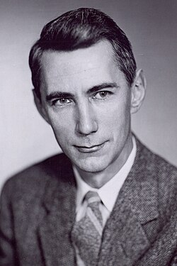

1916-2001
Claude Shannon

Portrait: Unknown authorUnknown author, CC BY 2.0, Wikimedia Commons.
Events (6)
- 1938Shannon switching circuits
developer · Algorithms & complexity
- 1941Wiener-Kolmogorov filtering
developer · Information & cryptography
- 1948Information theory
originator · Information & cryptography
- 1949Shannon: communication theory of secrecy
developer · Information & cryptography
- 1956Shannon capacity of graphs and the Lovász theta function
developer · Combinatorics
- 1958Entropy of dynamical systems (Kolmogorov-Sinai entropy)
developer · Analysis